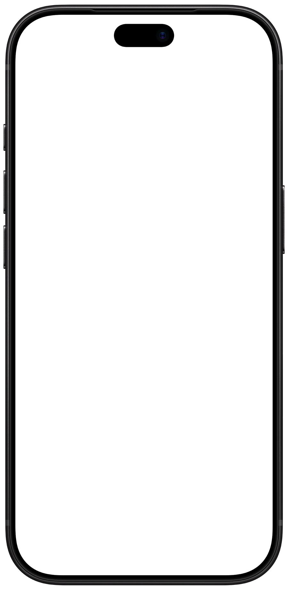
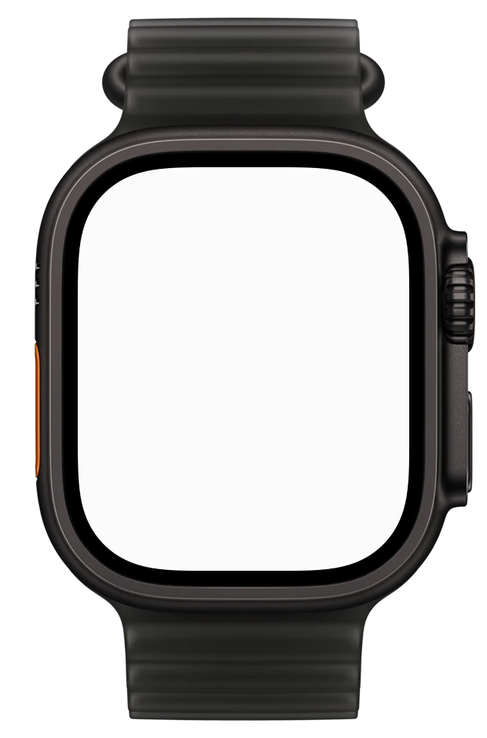
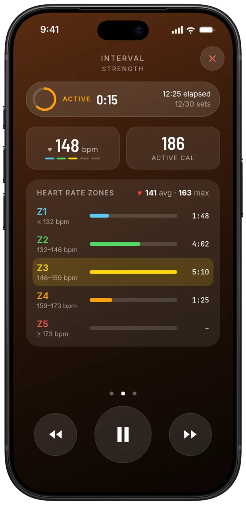
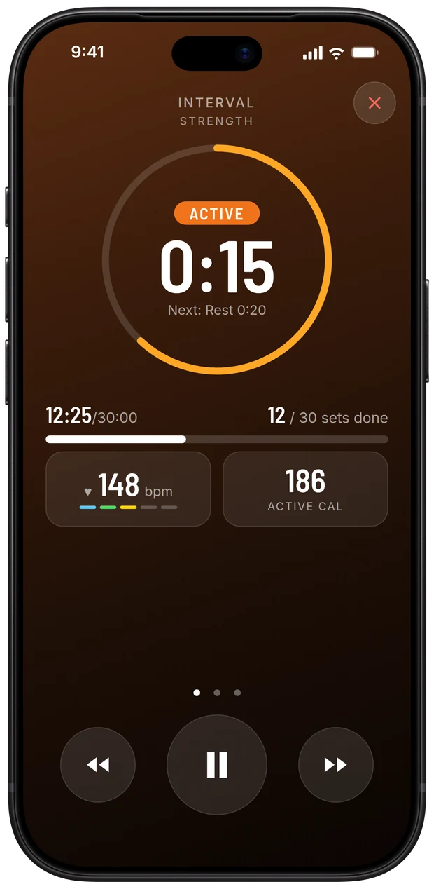
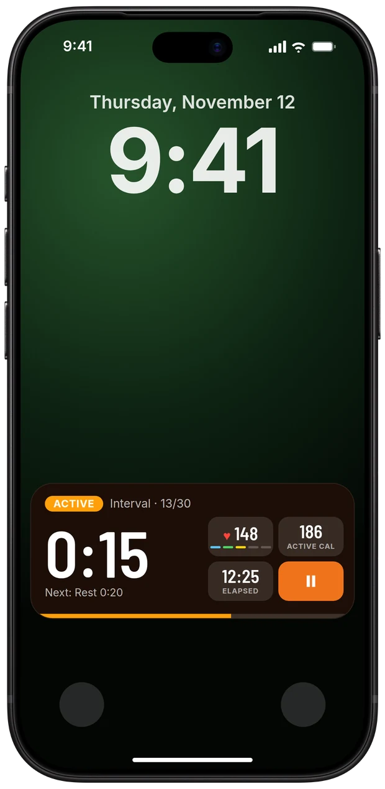
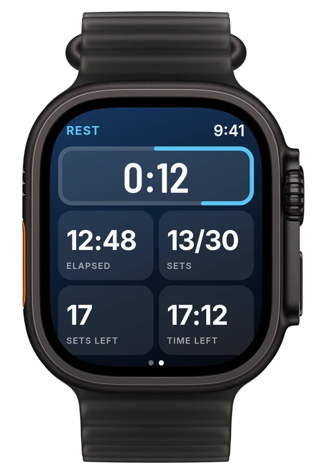
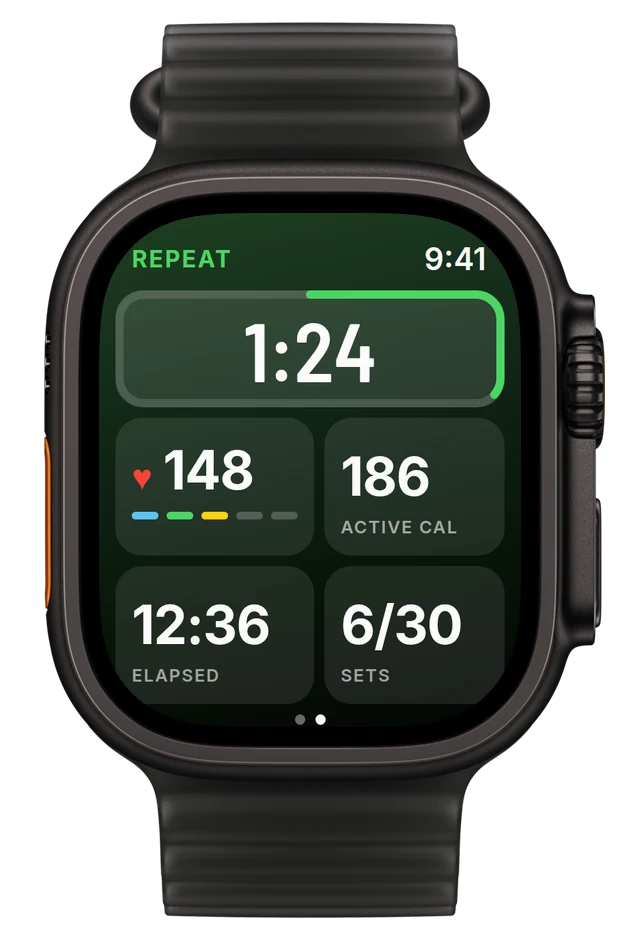
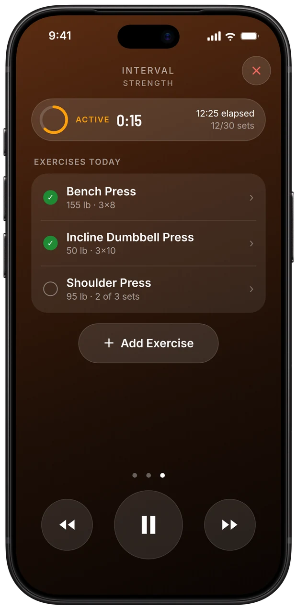
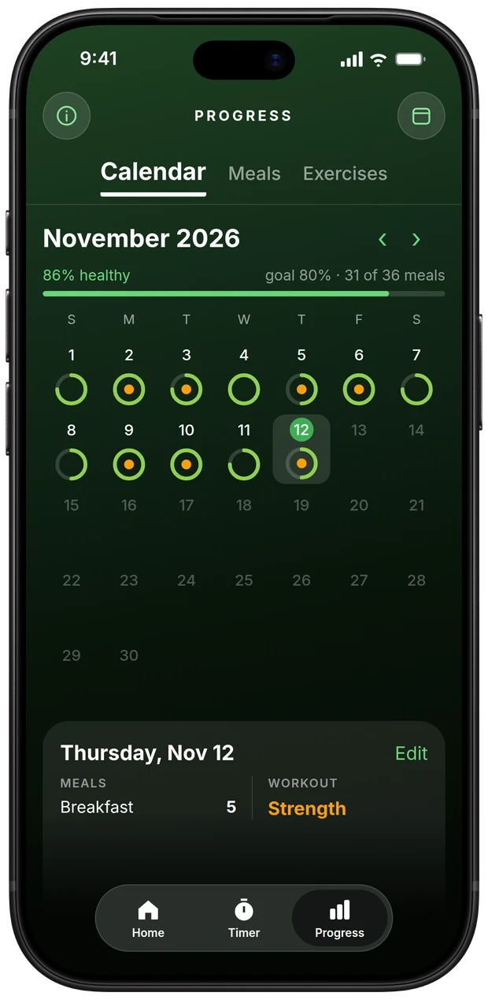
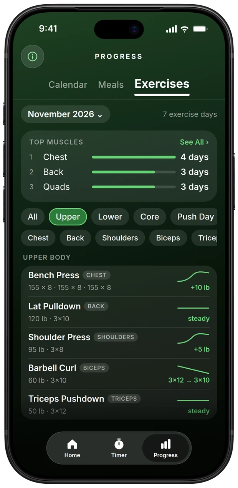

For iPhone, Apple Watch and iPhone Duo
Every set.
Right on time.
HasGym is a simple gym companion: a workout timer and a fitness tracker in one.


Live demo. iPhone and Apple Watch count down together, like the real app.
Overview
One app for
the whole session.
Timer
Rest on the clock.So progress is real.
Set your rest once and the timer holds you to it. No drifting into your phone for five minutes, and no wondering whether you got stronger or just rested longer.
- Voice, bells and haptics tell you where you are and how long is left
- Live heart rate, zones and calories, also on your Lock Screen



Apple Watch
Your timer,on your wrist.
The watch runs in step with your iPhone, so you can leave the phone on the bench.
- The phase and time left at a glance
- Sets, elapsed time and time left
- Heart rate, zones and active calories


Log
Log your liftswithout leaving the timer.
Swipe over during a workout and add what you just did. The timer keeps running.
Bench Press3×8 @ 155 lb
- Add an exercise in a couple of taps
- See everything you have done today
- Each set feeds your Progress charts

Progress
Watch the numbers climb.
Everything you log ends up in Progress: your days on a calendar, how healthy you eat, and every lift getting stronger.


Home
One tap fromyour next set.
Home puts logging and starting a workout right under your thumb.
- Tap + to log an exercise or a meal
- Tap a saved timer to start your workout
- See your sets per muscle this week
iPhone Duo
A layout for everyway you hold it.
Ready when you are.
Questions or feedback?
Send an email. Include your iPhone model and iOS version if something isn't working.